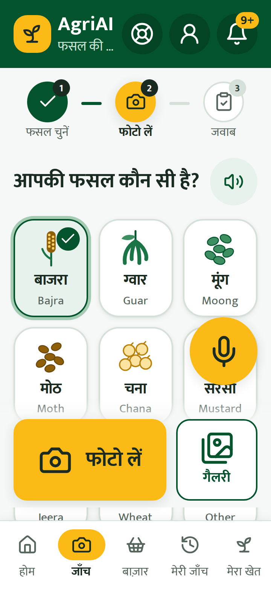
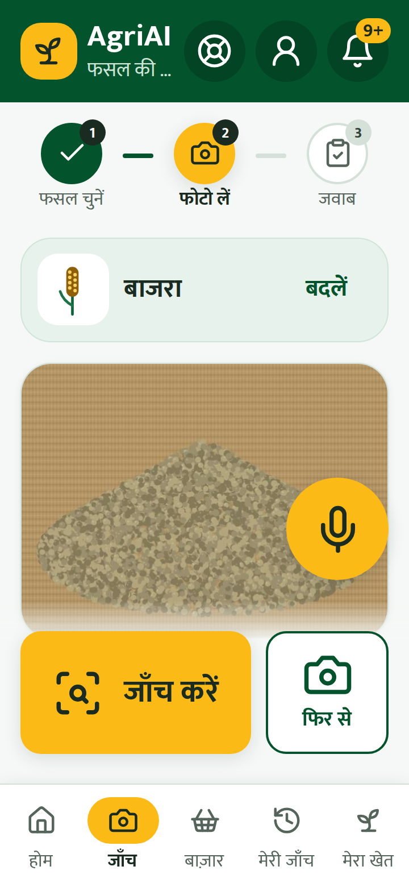
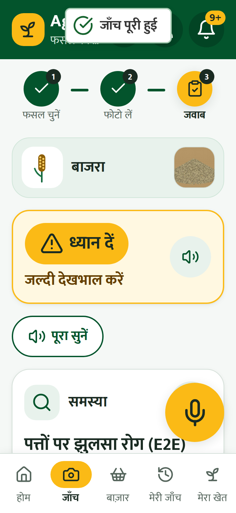
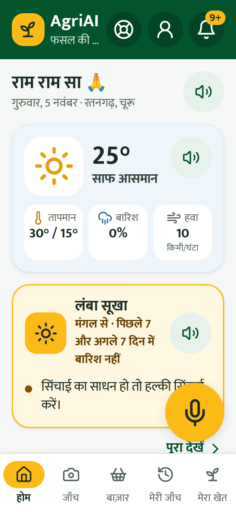
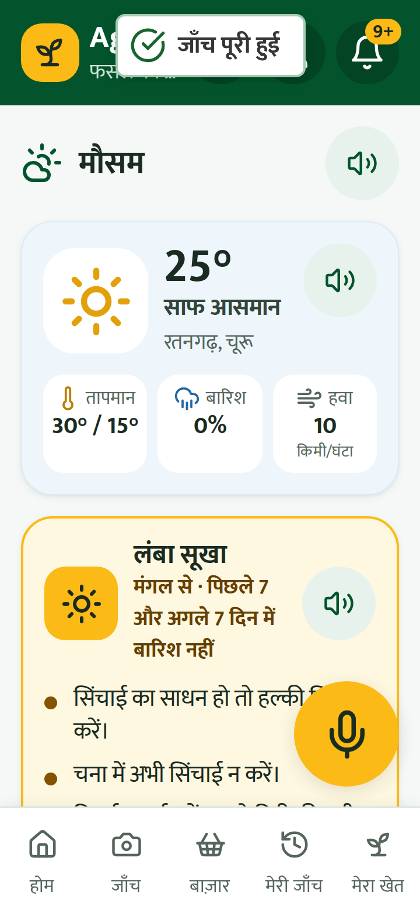
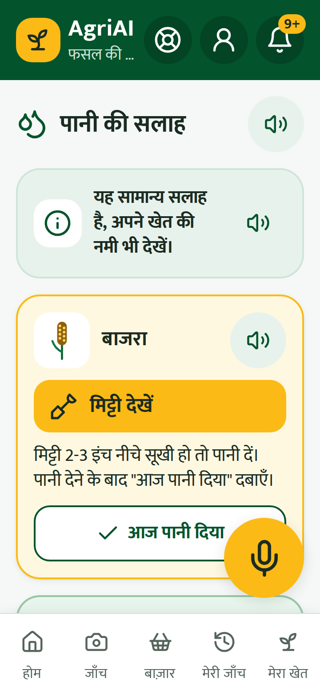
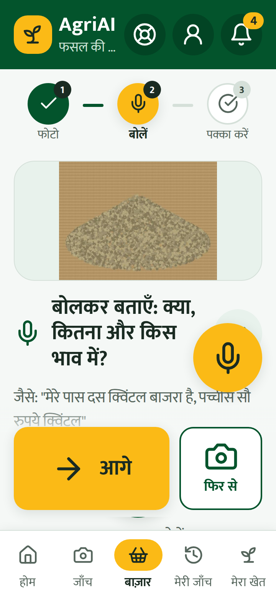
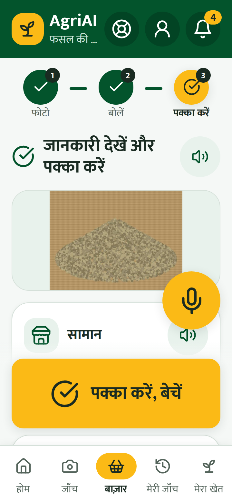
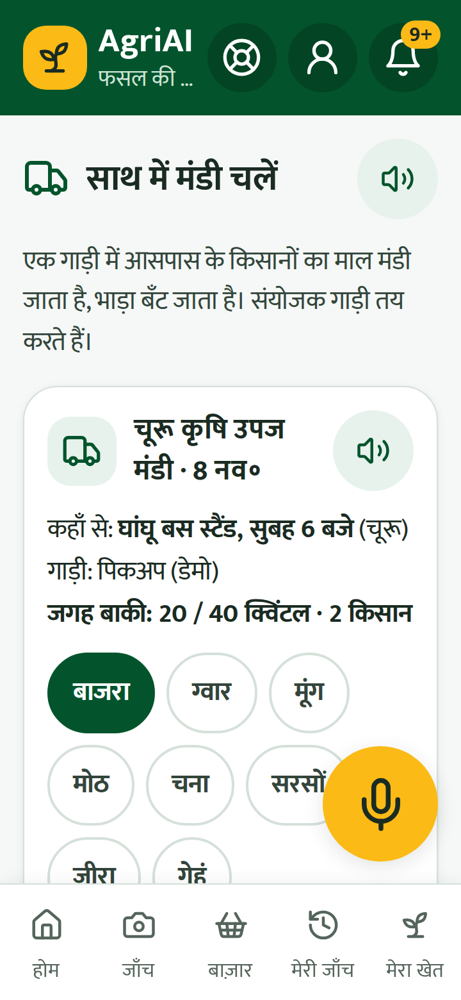

फसल की बीमारी, मौसम, पानी, बेचना – सब एक फ़ोन पर। मुफ़्त।
कैमरा से QR स्कैन करें
या Chrome में लिंक लिखें:
इंटरनेट चाहिए। पहली बार: “मैं सहमत हूँ” दबाएँ।
1ऊपर ⋮ दबाएँ
2“ऐप इंस्टॉल करें”
3अब हरे AgriAI आइकन से खोलें

121अपनी फसल चुनें
2“फोटो लें”
बीमार पत्ता पास से, दिन की रोशनी में।

33“जाँच करें” दबाएँ
फोटो धुंधली हो तो “फिर से”।

121बीमारी और उपाय
2🔊 “पूरा सुनें”
दवाई से पहले KVK / कृषि अधिकारी से पूछें। साफ़ न दिखे तो ऐप अंदाज़ा नहीं लगाता – नई फोटो लें।

121पीला 🎤 दबाएँ और बोलें
“मौसम बताओ” “फोटो जाँच”2🔊 = पढ़कर सुनाए

121आज का मौसम
2चेतावनी – सूखा, पाला, बारिश
होम पर “मौसम” दबाएँ।

121पहले मिट्टी देखें
2पानी दिया? “आज पानी दिया” दबाएँ
यह सामान्य सलाह है, अपने खेत की नमी भी देखें।
बाज़ार → “बेचें” → माल की फोटो लें। (पहली बार दीदी खाता बनवाएँगी।)

121🎤 बोलें: क्या, कितना, भाव
“दस क्विंटल बाजरा, पच्चीस सौ रुपये क्विंटल”2“आगे”

33जाँचें → “पक्का करें, बेचें”
ऑर्डर आए तो “स्वीकार करें”। पैसे UPI या नकद – सीधे खरीदार से।

121गाड़ी चुनें (मंडी, तारीख)
2फसल + क्विंटल → “जुड़ें”
एक गाड़ी, भाड़ा बँटेगा। दीदी फ़ोन करेंगी।
मदद चाहिए?
SHG दीदी का नाम:
फ़ोन:
कुछ गलत लगे → ऐप में “शिकायत करें”।
ऐप आपकी फोटो नहीं रखता। “मेरा खेत → मेरा डेटा” से अपना डेटा देख या मिटा सकते हैं।